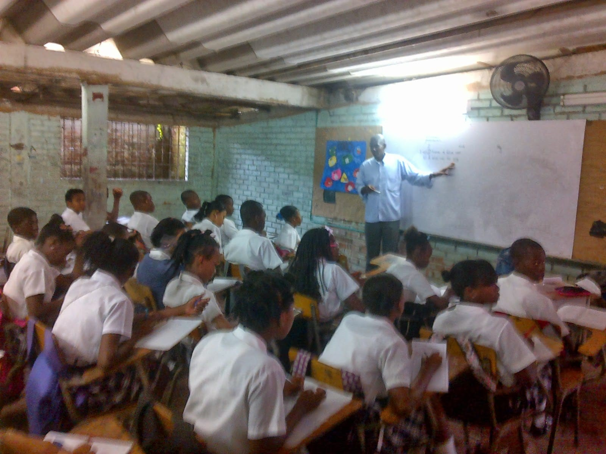

ASIGNATURA
(Informática)
DOCENTE
Prof. Elizabeth Chala
¿CÓMO ERA EL TEÓFILO ROBERTO POTES HACE 5O AÑOS?
La Institución Educativa Teófilo Roberto Potes era en
sus inicios un colegio no tan grande en
comparación con ahora, el polideportivo sólo se componía
de una cancha. Sus salones eran pocos, pequeños
y estrechos, cosa que con el tiempo se fue mejorando.

¿POR QUÉ EL INETERPO RECIBIO EL NOMBRE DE TEÓFILO ROBERTO POTES?
El INETERPO recibe el nombre de Teófilo Roberto
Potes en honor a este destacado personaje quien
llevó la danza y el currulao a otro
nivel, transformándolo no sólo en música sino también
en danza y en movimientos rítmicos y armónicos.
El legado que dejó en la región pacífica
es incomparable, por lo tanto, Teófilo Roberto
se recuerda con mucho respeto y admiración por
su trabajo realizado en le tiempo que él vivía.
¿CÓMO ERA EL PLANTEL EDUCATIVO Y LOS UNIFORMES ANTES?
Su plantel educativo era más pequeño a comparación
de ahora, con salones más pequeños, con pupitres
en vez de mesas, y con una cancha
que servía para los eventos que se dieran
a cabo para esa época. Se presentaba un
bloque en construcción, el cual delimitaba un espacio
considerable para la organización de más salones.

Gracias a esta construcción se acabo la incomodidad
que afrontaba los estudiantes, teniéndose que desplazar a
un colegio que para ese entonces quedaba cercano
al INETERPO, con el propósito de recibir sus
clases y realizar sus jornadas diarias.
El uniforme no sufrió tantos cambios en esos
tiempos, ya que los hombres presentaban el mismo
uniforme de ahora, pero las mujeres sólo se
les evidencio un cambio en su falda, no
siendo azul oscura sino de un gris adornado de cuadros.

A continuación se presentan los siguientes videos para
corroborar con las búsquedas:
ENTREVISTAS